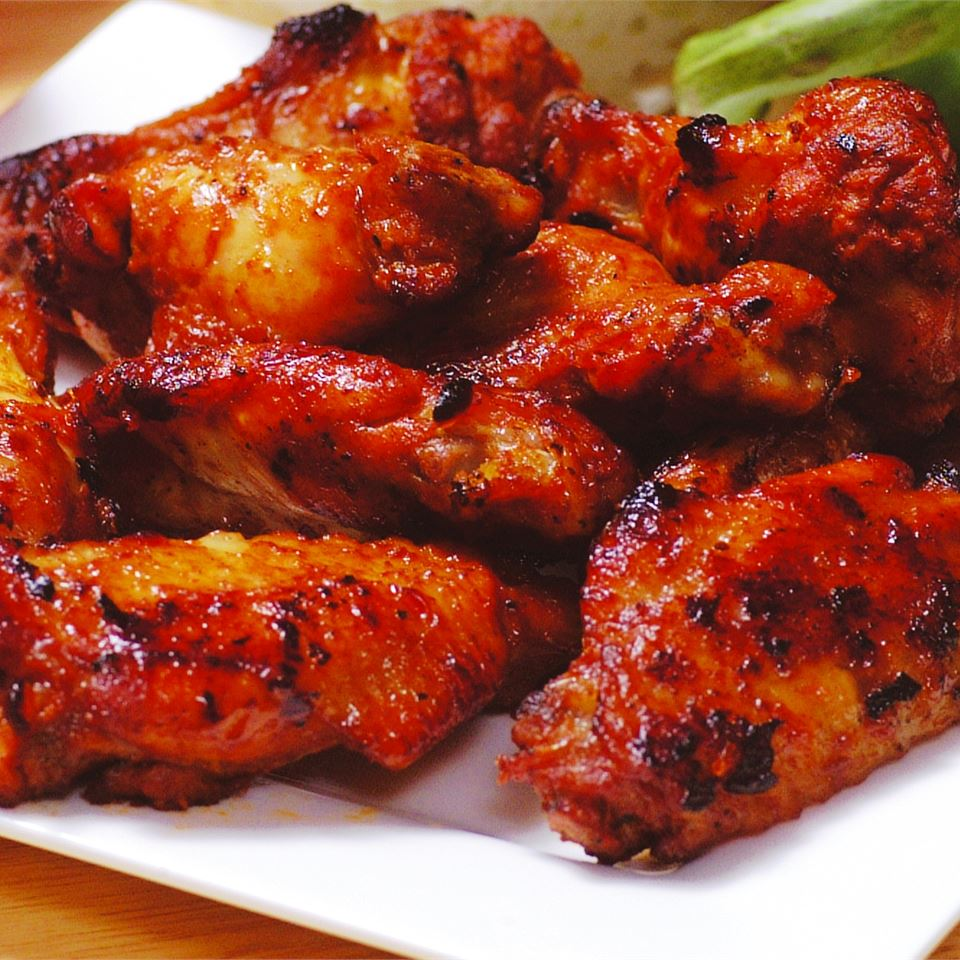

CARAMELIZED CHICKEN WINGS RECIPE

Description
Yummy chicken wings that are so easy to fix on the stove top or in an electric skillet. Perfect for webdev learners like us!!
Ingredients
- 1 cup water
- 1/2 cup white sugar
- 1/3 cup soy sauce
- 2 tablespoon peanut butter
- 1 tablespoon honey
- 2 teaspoon wine vinegar
- 1 tablespoon minced garlic
- 12 large chicken wings, tips removed and wings cut in half at joint
- 1 teaspoon sesame seeds, or to taste(optional)
Steps
- In an electric skillet or a large skillet over medium heat, mix together the water, sugar, soy sauce, peanut butter, honey, wine vinegar, and garlic until smooth and the sugar has dissolved.
- Place the wings into the sauce, cover, and simmer for 30 minutes.
- Uncover and simmer until the wings are tender and the sauce has thickened, about 30 more minutes, spooning sauce over wings occasionally.
- sprinkle with sesame seeds